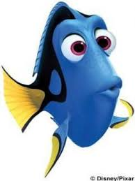
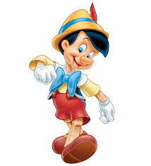
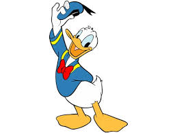

Dory
Cuando Disney lanzó su adaptación en vivo de 101 dálmatas en 1996, el encanto de los perros en pantalla tuvo un impacto significativo en las ventas de la raza. Tanto es así, que los activistas de los animales expresaron su preocupación de que la gente estuviera comprando dálmatas sin entender su temperamento único, llevando a decenas de dálmatas que terminan en refugios.
Inicio
Pinocho
Pinocho (en italiano Pinocchio) es la marioneta de madera protagonista del libro "Las aventuras de Pinocho", escrito por Carlo Collodi, seudónimo de Carlo Lorenzini (Florencia 1826-1890), y publicado en un periódico italiano entre 1882 y 1883, con los títulos "Storia di un Burattino" ("Historia de un títere") y "Le avventure di Pinocchio" ("Las aventuras de Pinocho'"), libro ilustrado por Enrico Mazzanti.
Inicio
Pato Donald
El Pato Donald (Donald Duck en el inglés original) es un personaje de Disney, caracterizado como un pato blanco antropomórfico de ojos celestes, pico, piernas y pies anaranjados.
Inicio